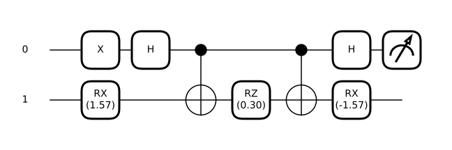
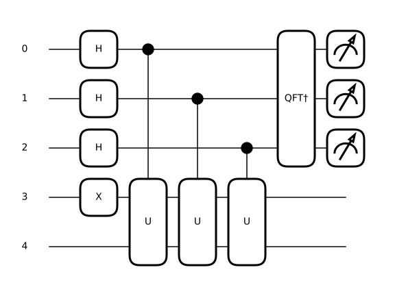

Station · chemistry
Solve a molecule with one knob
This is a real hydrogen molecule, in a Hamiltonian measured on a real quantum computer in 2016. Turn the knob until the energy stops falling. Where it stops is the answer — and classical chemistry cannot get there on its own.
The energy landscape you are steering
What the ancilla qubits read out
Each bar is one possible reading of the ancilla register. Add a qubit and the comb doubles in resolution.
The molecule
Dissociation curve — solve a bond length and it gets plotted
Show the maths
The molecule as two qubits. Hydrogen in a minimal basis gives four spin-orbitals; the Bravyi–Kitaev transform plus the symmetries of the Hartree–Fock reference reduce it to two qubits:
The six coefficients are functions of the bond length , tabulated in the paper.
The ansatz collapses. Unitary coupled cluster gives one parameter. The generator squares to the identity, so the exponential is just a rotation:
Acting on the Hartree–Fock state, and using , :
A real, two-term state. Every expectation value follows by inspection — note and both have :
Summing them gives a constant plus one sinusoid — no matrix exponential anywhere, which is what this page evaluates as you turn the knob:
So the minimum is available in closed form, and one parameter is genuinely enough for this molecule:
The variational principle guarantees you cannot cheat:
The floor you feel when turning the dial is real.

Hover or tap any gate to see what it does.
The other route: phase estimation
VQE guesses and checks. Quantum phase estimation reads the eigenvalue off directly — it is the textbook algorithm, and the same paper ran it on this very Hamiltonian. Evolving for time turns an energy into a phase:
QPE reports where , and must land in to be readable. Ground energies here run from to Ha, so shift and scale:
Choosing that window is part of the method, not a trick: you must know roughly where the eigenvalue is before you can pin it down precisely.
How the circuit reads it. Put ancillas in superposition, apply controlled on ancilla , and the register picks up a phase ramp:
Measuring the ancillas gives
If happens to be exactly bits long, that is 1 on the right answer and 0 everywhere else. Otherwise the nearest bin still wins with probability at least , and the energy error is at most half a bin:
One more qubit, half the error. That is the whole behaviour of the bit slider. Reaching chemical accuracy ( Ha) needs ancillas — and, crucially, coherence long enough to run . That coherence requirement is exactly what NISQ hardware does not have, and exactly why VQE was invented.

Hover or tap any gate to see what it does.
One number this station deliberately does not show. The published table stops at 2.85 Å, before the curve flattens, so a bond dissociation energy computed from it would read about 5.5 eV against an experimental 4.75 eV. The curve is honest; that derived number would not be.
verify/test_reference.py.